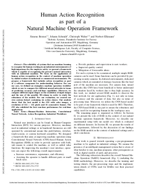

2021 ETFA
Human Action Recognition as part of a Natural Machine Operation Framework
S. Bexten, J. Schmidt, C. Walter, and N. Elkmann
IEEE International Conference on Emerging Technologies and Factory Automation
The reliability of systems that use machine learning to recognize the human working in an industrial environment is of high importance for employee safety. We present a framework which is capable of recognizing the person's natural interaction with an industrial machine. We focus on the application of human action recognition in the context of machine operation by skilled workers in industrial or commercial environments. We propose a framework that includes action recognition as part of a software component for understanding behavior. For our use case, we defined an exemplary machine operation workflow which we use to compare five different neural networks in terms of prediction accuracy and real-time capabilities. Moreover, we compare different input shapes, such as the resolution of input images and the size of the possible 3D-volume in order to study the robustness of the models. For our evaluation, we created our own custom dataset containing six action classes. Our analysis shows that the best model is the I3D with color images, a resolution of 112 x 112 pixels and 16 consecutive frames. The I3D also exhibited the best run-time performance for real-time applications.
@inproceedings{Bexten2021,
title = {Human Action Recognition as part of a Natural Machine Operation Framework},
author = {Bexten, Simone and Schmidt, Johann and Walter, Christoph and Elkmann, Norbert},
booktitle = {IEEE International Conference on Emerging Technologies and Factory Automation},
year = {2021},
doi = {10.1109/ETFA45728.2021.9613331},
url = {https://ieeexplore.ieee.org/document/9613331}
}